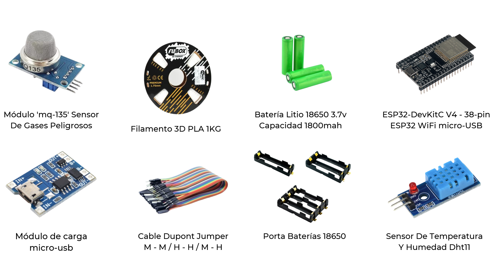

Semana 9: Análisis de Costo y Materiales

Esta semana nos enfocamos en calcular el costo del proyecto y en identificar los materiales necesarios para llevar a cabo nuestro trabajo. Después de analizar los componentes y herramientas requeridas, logramos definir un listado de materiales esenciales para la construcción de nuestro dispositivo. Los elementos que necesitaremos son los siguientes:
Un campo clave en el diseño y desarrollo de prototipos. Esta exploración nos permitió comprender conceptos esenciales sobre el futuro de la producción y las oportunidades que ofrece la tecnología para crear piezas y modelos innovadores.
Cálculo de Costo
Esta semana nos enfocamos en calcular el costo del proyecto y en identificar los materiales necesarios para llevar a cabo nuestro trabajo. Después de analizar los componentes y herramientas requeridas, logramos definir un listado de materiales esenciales para la construcción de nuestro dispositivo. Los elementos que necesitaremos son los siguientes:

Con todos estos materiales en mente, ahora tenemos un plan más claro sobre lo que necesitaremos para ensamblar nuestro dispositivo y asegurar su correcto funcionamiento.